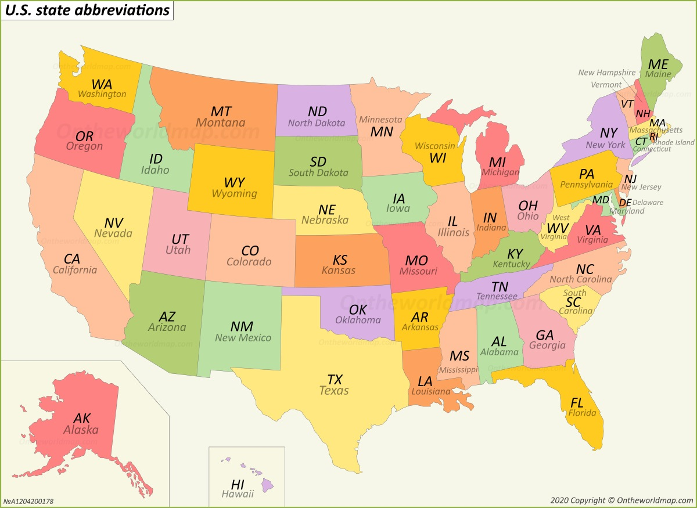
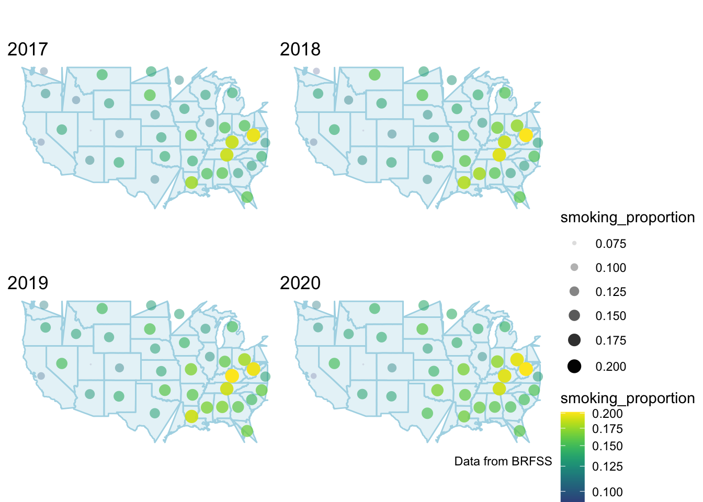

###The Distribution of Smoking Proportion By States

The more yellowish and bigger the dot, the higher the smoker’s proportion. Conversely, the bluer and smaller the dot, the lower th smoker’s proportion of the state. This graph gives an overview of the distribution of smoking proportion in the U.S. Based on the graph, states in the southeast had higher smoking rates in the past 4 years.
tax_df = read.csv("data/CDC_STATE_System_Tobacco_Legislation_-_Tax.csv") %>%
janitor::clean_names() %>%
select(year, location_abbr:topic_desc, measure_desc, provision_desc, provision_alt_value, data_type, geo_location) %>%
filter(!(provision_alt_value == 0)) %>%
filter(data_type %in% c("Money", "Number")) %>%
distinct() %>%
filter(year == 2020)
tax_2020_map = tax_df %>%
filter(topic_desc == "Legislation - Tax Combustible Tobacco",
!(provision_desc == "Percent Value"),
measure_desc == "Cigarette") %>%
group_by(location_abbr) %>%
mutate(location_abbr = reorder(location_abbr, provision_alt_value)) %>%
plot_geo(locationmode = 'USA-states') %>%
add_trace(z = ~provision_alt_value, text = "$/pack", locations = ~location_abbr,
color = ~provision_alt_value, colors = "Blues") %>%
layout(title = "Cigarette Tax Value by State in 2020", geo = g) %>%
colorbar(title = "Tax value")
tax_2020_mapStates in the southeast had higher smoking rates in the past 4 years.This may be explained by the states’ cigarette tax. By comparing the state’s tax and the smoking rates, it can be observed that southeast has a comparatively low cigarette tax when compared to other areas.
three_highest =
clean_brfss %>%
ungroup() %>%
select(year, locationdesc, smoking_proportion) %>%
mutate(year = as.factor(year)) %>%
mutate(smoking_proportion = round(smoking_proportion, digits = 3)) %>%
group_by(year) %>%
top_n(3) %>%
arrange(year, desc(smoking_proportion)) %>%
mutate(string = str_c(locationdesc, ", ", smoking_proportion)) %>%
select(-locationdesc, -smoking_proportion) %>%
pivot_wider(
names_from = year,
values_from = string
) %>% unnest()
knitr::kable(three_highest)| 2017 | 2018 | 2019 | 2020 |
|---|---|---|---|
| Guam, 0.226 | West Virginia, 0.212 | Kentucky, 0.206 | West Virginia, 0.202 |
| West Virginia, 0.221 | Tennessee, 0.205 | West Virginia, 0.201 | Ohio, 0.196 |
| Tennessee, 0.212 | Kentucky, 0.199 | Tennessee, 0.193 | Kentucky, 0.194 |
West Virginia, Kentucky, and Tennessee are the most seen in this table. West Virginia had 2nd, 1st, 2nd, 1st proportion of smoking in 2017 (22.1%), 2018 (21.2%), 2019 (20.1%), and 2020 (20.2%), respectively. Tennessee had the 3rd, 2nd, 3rd proportion of smoking in 2017 (21.2%), 2018 (20.5%), 2019 (19.3%), respectively. It shows a slightly decreasing trend with time, which is a good sign. Kentucky had the 3rd, 1st, and 3rd proportion of smoking in 2018 (19.9%), 2019 (20.6%), and 2020 (19.4%), respectively. In addition, Guam only had the highest smoking proportion in 2017 (22.6%), and not appeared in top 3 later. The state government might have paid attention to the smoking problem. However, Ohio became the 2nd highest smoking proportion in 2020 (19.6%).
three_lowest =
clean_brfss %>%
ungroup() %>%
select(year, locationdesc, smoking_proportion) %>%
mutate(year = as.factor(year)) %>%
mutate(smoking_proportion = round(smoking_proportion, digits = 3)) %>%
group_by(year) %>%
top_n(-3) %>%
arrange(year, smoking_proportion) %>%
mutate(string = str_c(locationdesc, ", ", smoking_proportion)) %>%
select(-locationdesc, -smoking_proportion) %>%
pivot_wider(
names_from = year,
values_from = string
) %>% unnest()
knitr::kable(three_lowest)| 2017 | 2018 | 2019 | 2020 |
|---|---|---|---|
| Utah, 0.082 | Utah, 0.082 | Utah, 0.071 | Utah, 0.07 |
| Puerto Rico, 0.093 | Puerto Rico, 0.09 | Puerto Rico, 0.085 | California, 0.085 |
| Connecticut, 0.106 | Washington, 0.104 | California, 0.101 | Puerto Rico, 0.089 |
Among all the states, Utah has the lowest smoking proportion in the four years, which were 8.2% (2017), 8.2% (2018), 7.1% (2019), 7.0% (2020). Puerto Rico has the 2nd lowest smoking proportion in 2017 (9.3%), 2018 (9%), and 2019 (8.5%), and the 3nd in 2020. California also did well in 2019 (10.1%) and 2020 (8.5%). They even shows a slightly decreasing trend with years. However, Connecticut and Washington only appeared once in 2017 (10.6%) and 2018 (10.4%) respectively.
change_df =
clean_brfss %>%
ungroup() %>%
arrange(smoking_proportion) %>%
select(year, locationabbr, lat, long, smoking_proportion) %>%
pivot_wider(
names_from = year,
values_from = smoking_proportion
) %>%
drop_na() %>%
rename( new = "2020",
old = "2017",
state = locationabbr) %>%
mutate(change = new - old) %>%
arrange(change) %>%
mutate(state = fct_reorder(state, change)) %>%
select(state, lat, long, change) %>%
mutate(change = round(change, digits = 4))
change_df %>%
mutate(
text_label = str_c("State: ", state, "\nDecrease in Proportion: ", change)
) %>%
plot_ly(
x = ~state, y = ~change, color = ~state, type = "bar", text = ~text_label, colors = "viridis"
) %>%
layout(title = "The Decrease in Smoking Proportion Comparing 2020 to 2017",
xaxis = list(title = "State"),
yaxis = list(title = "Decrease in Proportion"))Guam has the highest decrease in the proportion of smoking comparing 2020 to 2017 with a value of 6.15%. District of Columbia has the second large decrease of smoking proportion with a value of 5.16%. On the contrary, Texas has the highest increase in the proportion of smoking with a value of 2.61%.Ohio has the second highest increase in the proportion of smoking with a value of 2.07%